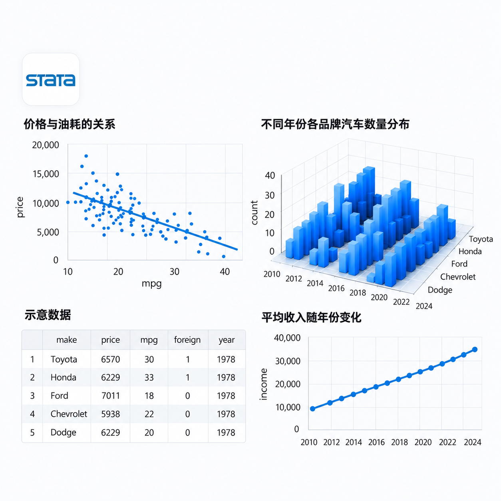
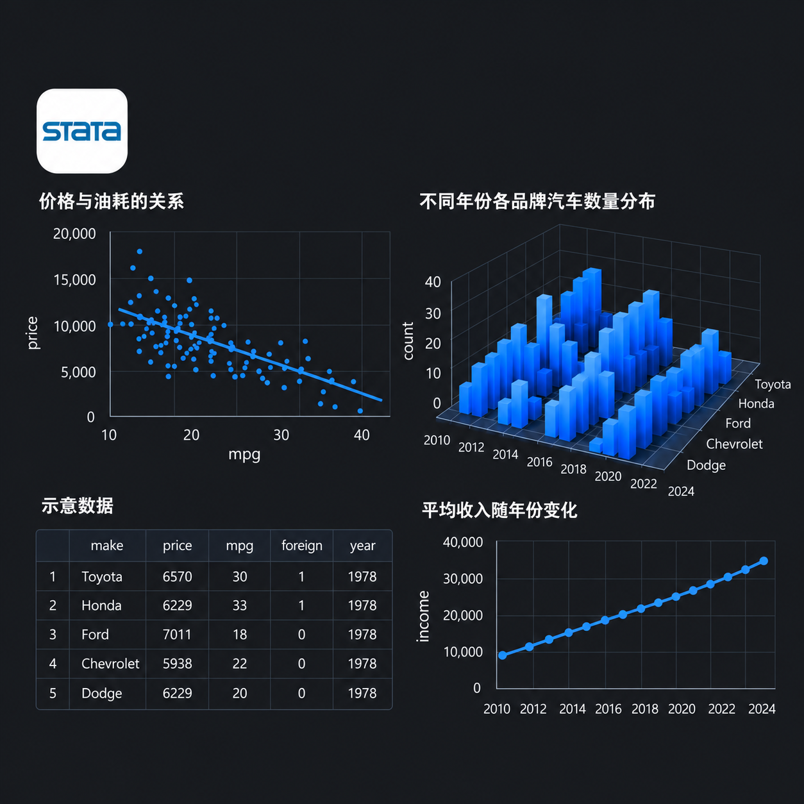

Stata数据分析教程
从数据整理、统计描述到回归分析，配合完整代码示例与练习。


命令速览
各节独立示例开始使用
sysuse auto, clear
describe
summarize price mpg weight
countsysuse auto, clear
pwd
local here `"`c(pwd)'"'
cd "."sysuse auto, clear
capture log close tutorial_project
log using "tutorial_project.log", text replace name(tutorial_project)
isid makesysuse auto, clear
capture log close tutorial
log using "tutorial_log.log", text replace name(tutorial)
summarize price mpgsysuse auto, clear
which summarize
which tabstat
describe pricesysuse auto, clear
version 17
local old_more "`c(more)'"
local old_linesize = c(linesize)命令与条件
sysuse auto, clear
summarize price-headroom
summarize l*
summarize ?u?nsysuse auto, clear
list make price in 1/5, noobs
list make price in 1/5 if price > 4000 & price < 7000, noobs
count if price >= 15000 | price <= 3300sysuse auto, clear
count if rep78 > 4
count if rep78 > 4 & !missing(rep78)
count if missing(rep78)文件与数据
clear
input int id str12 city double gdp
1 "甲市" 120.5
2 "乙市" 230.8sysuse auto, clear
export excel make price weight foreign using "tutorial_import.xlsx", ///
sheet("Cars") firstrow(variables) replace
import excel using "tutorial_import.xlsx", describesysuse auto, clear
export delimited make price foreign using "tutorial_text.csv", replace
import delimited using "tutorial_text.csv", ///
varnames(1) stringcols(1) encoding("UTF-8") clearsysuse auto, clear
save "tutorial_saved.dta", replace
export excel make price mpg using "tutorial_saved.xlsx", ///
sheet("Cars") firstrow(variables) replace查看与统计
sysuse auto, clear
describe
codebook make rep78
list make price mpg in 1/5, noobssysuse auto, clear
summarize price weight length
summarize price, detail
summarize price if foreign == 1sysuse auto, clear
tabulate foreign
tabulate foreign, nolabel
tabulate rep78, missingsysuse auto, clear
tabstat price weight mpg, ///
statistics(n mean sd min p25 p50 p75 max) ///
columns(statistics) format(%12.3f) noseparatorcorrelate hours score income
pwcorr hours score income, sig obssysuse auto, clear
summarize price, detail
return list
display r(mean)变量属性
sysuse auto, clear
rename price newprice
order foreign newprice, after(make)
describesysuse auto, clear
generate float small_precision = 123456789
generate double high_precision = 123456789
generate double copied_later = small_precisionsysuse auto, clear
list make price gear_ratio in 1/5, noobs
format price %10.2f
format gear_ratio %8.3fsysuse auto, clear
label data "1978 年汽车样本"
label variable price "汽车价格（美元）"
label define tutorial_origin 0 "国产车" 1 "进口车"sysuse auto, clear
notes: 数据来源：Stata 自带的 1978 年汽车数据 auto.dta。
notes price: 单位为美元；本例不改变原始价格。
notes list数据清理
sysuse auto, clear
tostring price, generate(price_text)
destring price_text, generate(price_numeric)
decode foreign, generate(origin_text)sysuse auto, clear
generate padded_make = " " + make + " "
generate clean_make = ustrtrim(padded_make)
generate upper_make = ustrupper(clean_make)sysuse auto, clear
misstable summarize rep78 headroom trunk
misstable patterns rep78 headroom trunk
egen byte n_missing = rowmiss(rep78 headroom trunk)sysuse auto, clear
quietly summarize price, detail
local iqr = r(p75) - r(p25)
local lo = r(p25) - 1.5 * `iqr'sysuse auto, clear
drop turn
keep make price foreign rep78
drop if missing(rep78)sysuse auto, clear
keep make price foreign
keep in 1/5
tempfile first_fivesysuse auto, clear
isid make
assert !missing(make, price, mpg)
assert price > 0变量构造
sysuse auto, clear
generate double price_sq = price^2
generate double rep78new = rep78
summarize rep78sysuse auto, clear
generate double log_price = ln(price) if price > 0 & !missing(price)
generate double root_weight = sqrt(weight) if weight >= 0 & !missing(weight)
generate double centered_mpg = (mpg - 25) / 10sysuse auto, clear
generate byte repair_ok = cond(missing(rep78), ., rep78 >= 3)
generate byte selected = inlist(rep78, 1, 5) if !missing(rep78)
generate byte legal_mpg = inrange(mpg, 12, 41)sysuse auto, clear
summarize price
local mean_price = r(mean)
generate byte pricerank = (price >= `mean_price') if !missing(price)sysuse auto, clear
recode rep78 (1/2 = 1 "较差") (3 = 2 "一般") (4/5 = 3 "较好"), generate(repair_group)
generate byte group0 = irecode(rep78, 2, 3) if !missing(rep78)
tabulate rep78 repair_group, missingsysuse auto, clear
egen double overall_price = mean(price)
bysort foreign: egen double mean_price = mean(price)
bysort foreign: egen double total_price = total(price)sysuse auto, clear
generate double quote_low = price * .95
generate double quote_high = price * 1.05
replace quote_low = . if missing(rep78)sysuse auto, clear
keep in 1/6
egen wave = seq(), from(1) to(3)
egen block_id = seq(), from(1) block(3)sysuse auto, clear
fvexpand ib0.foreign##c.weight
display "`r(varlist)'"
generate double foreign_weight = foreign * weight排序与分组
sysuse auto, clear
sort price make
list make price in 1/5, noobs
list make price in 11, noobssysuse auto, clear
bysort foreign (price make): generate int group_rank = _n
by foreign: generate int group_size = _N
by foreign: summarize pricesysuse auto, clear
generate int id = _n
sort price id
generate int price_rank = _n数据整合
sysuse auto, clear
generate int auto_id = _n
tempfile attributes
preservesysuse auto, clear
tempfile domestic imported
preserve
keep if foreign == 0sysuse auto, clear
recast double price
collapse (count) car_count=price (sum) total_price=price ///
(mean) mean_price=price (sd) sd_price=price, by(foreign)sysuse auto, clear
count
preserve
keep if foreign == 1自动化
sysuse auto, clear
local variables price weight length
local cutoff = 6000
summarize `variables' if price >= `cutoff'sysuse auto, clear
foreach v of varlist price weight length {
generate double ln_`v' = ln(`v')
summarize `v' ln_`v'
}compress
set seed 20261022
sample 10, count回归分析
sysuse auto, clear
regress price weight
estimates store simple
regress price weight length mpg i.foreign, vce(robust)predict double fitted if e(sample), xb
test education experienceivregress 2sls y w (x = z1 z2), vce(robust)
estat firststage政策评估
xtset id year
xtreg y did i.year, fe vce(cluster id)xtreg y lead3 lead2 lag0 lag1 lag2 i.year, fe vce(cluster id)
test lead3 lead2regress outcome i.treated##c.running if abs(running) <= 20, vce(robust)面板数据
xtset id year
xtreg y x i.year, fe vce(cluster id)图形与扩展
sysuse auto, clear
keep in 1/6
generate int obs_order = _n
drop if obs_order == 3sysuse auto, clear
set rng mt64
set seed 20261014
generate double u = runiform()sysuse auto, clear
local old_graphics "`c(graphics)'"
set graphics offsysuse auto, clear
local old_graphics "`c(graphics)'"
set graphics offsysuse auto, clear
which summarize
which collapse
ado dir结果输出
estimates table output1 output2, b(%9.3f) se(%9.3f) stats(N r2)
putexcel set "tutorial_models.xlsx", replace共 15 个模块、63 节课程。初次学习，可以按顺序阅读；查找某条命令，可以展开顶部课程目录或使用搜索。每节都有语法、参数表、可运行示例和自测题。
01开始使用
02命令与条件
03文件与数据
04查看与统计
05变量属性
06数据清理
07变量构造
- generate 与 replace：创建和修改把逐行计算写成可追踪的命令。
- 数学函数：对数、平方根和取整知道函数的定义域，也知道不同取整规则的区别。
- cond、inlist 与 inrange用条件函数表达选择、集合和范围。
- 虚拟变量：0/1 编码把类别信息写成可以解释的指示变量。
- recode：按阈值划分类别把连续数值转换成有明确边界的分组。
- egen：生成全样本与分组统计量把均值、总和与有效样本数变成变量，供后续计算使用。
- egen rowmean：在同一行跨变量计算为每个观测计算多列均值、合计及缺失数量。
- seq 与 fill：生成练习序列创建年份循环和分块编号，理解行顺序如何影响结果。
- i. / c. / # / ##：理解因子变量写法用统一语法声明类别变量、连续变量和交互组合。